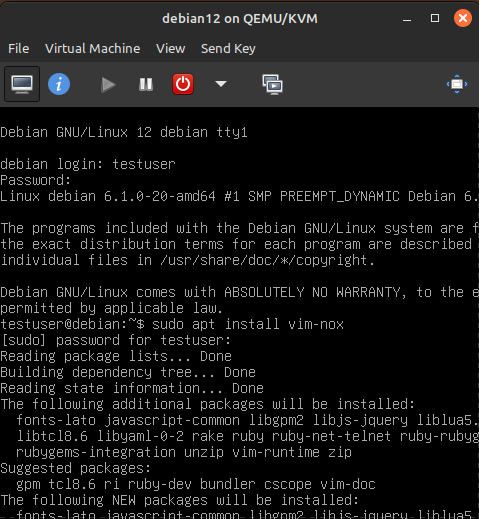

Next, I wanted to test the multi-user capabilities of my new Debian-12 virtual machine. I created a new user named "testuser" and gave them sudo privileges. Here's how I did it:
At first, sudo was not installed on the Debian-12 VM. Since I would need it, I elevated to root and installed it with the following commands:
su -
apt install sudo
Next (still running as root), I created a new user named "testuser" with the following command:
adduser testuser
I was prompted to enter some information about the new user, such as their password and full name. I entered the information and the user was created.
Finally, I decided to add this new user to the sudo group so that they could run commands with elevated privileges. I did this with the following command:
usermod -aG sudo testuser
After this, I was able to reboot, log in as "testuser", and run commands with sudo, which was a great success. As you can see in the image below, I was able to install vim-nox with my newfound sudoer powers! If only I could use vscode... ah the struggles of not having a GUI
